Step 3a: Finalizing and Exporting the 3D Mesh(es)
You are now ready to export the 3D Mesh(es).
If you are converting from Need for Speed 1-6, this is a LONG process!
Make sure the objects you are going to export are selected in the Objects list, and hit Export.
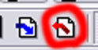
A dialog box shows up asking you to save it. In the Save as type menu, find and select Viper Racing & Nascar Heat (*.mod).
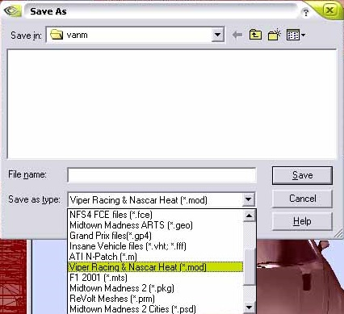
Type the short name of the car, but put an a after the name, like vanqsha.mod
When you hit save, this will show up. Just select the objects you want to show up at the highest LOD (if applicable).
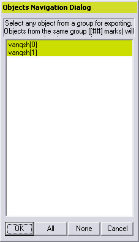
After that, the next dialog asks which game. Obviously, you might want to select Viper Racing.
Hit New, and Import your exported MOD.
Your car will now have black windows. Do not worry, this is not a problem.
If your car is NOT from Need for Speed 1-6, you can skip this part and head down to the exporting.
If your car is from Need for Speed 1-6, you will need to assign a window texture to tint the windows, since the texture has an alpha mask for fast colorization in Need for Speed. You can make your own, or get the tint pack at http://supra_twinturbo_r.tripod.com/imprezamain/id1.html.
You will also need to change the texture's name from carXXX (XXX is a number) to a UNIQUE name that is not the same as the car's file or another car. Just remember it has to be no more than eight characters long, as the packing file is a DOS program. Simply switch to explorer, browse to the folder, copy the texture and rename the copy.
Once you finished that, switch back to ZModeler and go to Material Editor.
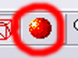
You should have a window that looks like this.
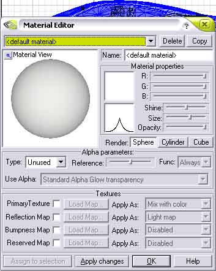
If you hit the pull down menu, you get a list of materials. Unfortunately, they are all named Textured Material: carXXX.tga
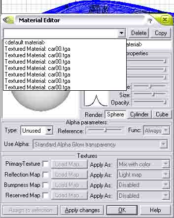
Click on one of them, and next to Primary Texture click the carXXX.
A window pops up asking for which texture. Select carXXX.tga and hit Replace Texture...
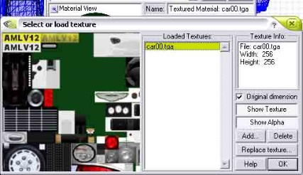
Select your renamed texture and hit OK. Now all the materials that use carXXX will use your renamed texture. DO NOT close the material editor yet. Remember the long list of carXXX.tga materials? You now have to go one by one, uncheck Primary Texture, hit Apply, and see what turns white. Then , recheck the Primary texture, hit apply. Go to the next material, and keep at it until you find the material that has the windows and/or headlight covers and/or driver's shades.
BINGO!
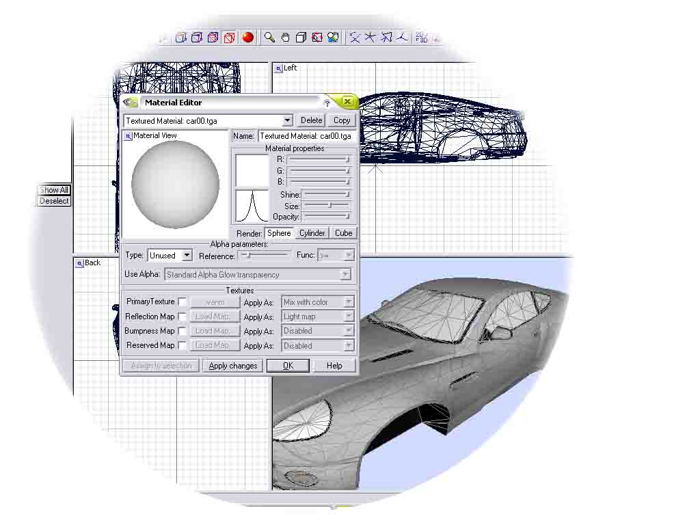
Click on the Name: Box and rename this Material to Windows.
If only the windows, headlight covers, and / or driver's shades turn white, skip the next part.
If more than just the windows, headlight covers, and Driver's shades turn white, rename it to something other than windows, like stuff.
Hit Copy, go to the bottom texture, and rename it to Windows, then
This is the hard way of reassigning textures.
Go to the Faces level, and click on the Exterior model.
Go to Select... By Material
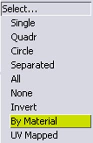
and in the window that shows up select the material and hit the big button that says select by this material. Hover your mouse over the exterior model, and the selection shows up.
Now, go back to Select... Invert. Right-click and the selection inverts.
Go to Display... Hide
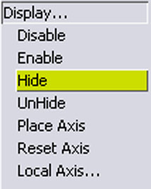
Make sure SEL is on, then click, and the unneeded faces hide for a while.
From here, just select the windows with the Square Selection tool, using SHIFT to Add to the selection and CTRL to subtract from the selection.
Then, Right-Click the Exterior object name in the object list, go to Faces... Properties
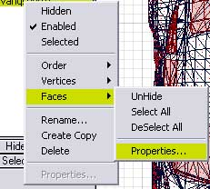
A window shows up. Go to the Material: window and select Windows. Hit OK.
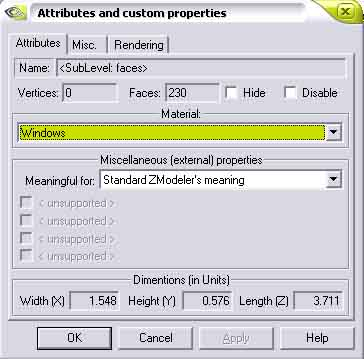
Now, you can go to Display... UnHide, click, and everything returns.
That's it for the long way. Go make yourself a sandwich or drink a tall glass of water. That was the hard part.
Now, go to the Material Editor, go to Windows, click on the Primary Texture and Add the texture you want for the windows. Hit OK.
You're not done yet, so go ahead and put the chicken in the oven.
Right-Click the exterior model in the list, hit Order... Move Down. Repeat until it is at the bottom.
Go back to the Material Editor, select Windows, and under the sphere (or cylinder or box), click on the Drop down menu that says Type, and switch to Glowing.
Below to the Type there should be the Alpha type set to "Standard Alpha Glow transparency." If this is right, you will see the windows and whatever that's see-thru see-thru. Repeat if you have to for the other stuff.
If you see the interior roof and pillars inside the windows, you can skip the next part.
Make sure only the exterior is showing, and right-click the exterior object in the list, hit Create Copy
A window shows up. In the window, change the [0] to a [2] or whatever you can.
Make sure only the [2] or whatever model is showing.
Go to the faces level, turn on your trusty square selector, hit Modify... Delete, and delete everything but the roof and the roof support pillars, all the way to where they meet the body. Then, go to Objects level, hit Modify... Reorient. This will make the pillars and roof switch the direction they are showing, so you will see them on the inside.
Finally, you can get this exported!
Make sure all the models are selected, and hit export. Export this as your car's short name with a 0 at the end. Then, repeat the exporting all the way to 7, unless you have an LOD, in which case you would open the next LOD, repeat all of the above that is applicable, and export it.
In terms of the LOD, 0 is the UI model, 1 is the closest in-game model, and 7 is the furthest away. You may only have two or three LOD models, so you will be repeating LODs for a few numbers, like 0-3 is the highest, 4-5 is the medium, and 6-7 is the furthest away.
Once you have completed this laborious task, and downed a snack, you can move ONWARD.